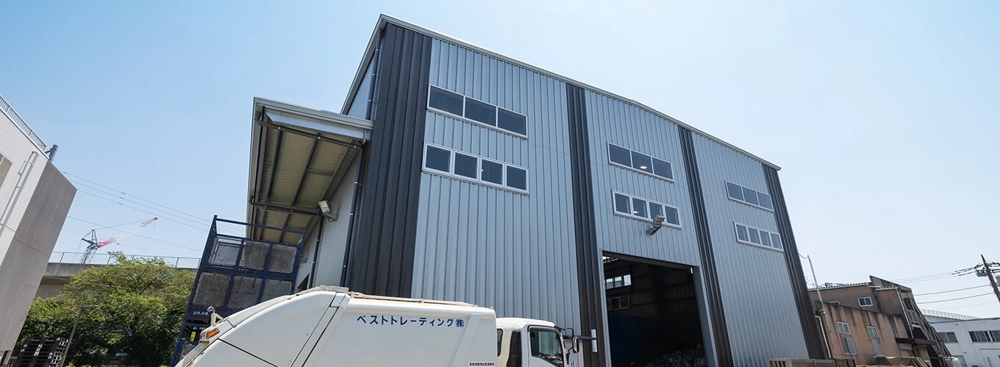

受け入れたプラスチック資源は、4つの工程を経て再商品化の原料となり、地域で再び活用されます。
風力選別機・光学式選別機などを用い、素材ごとに原料を選り分けます。
破砕機により、選別された資源を後工程に適した大きさへ加工します。
圧縮梱包機でベール化し、運搬・保管しやすい形状に仕上げます。
原料を圧縮・成形して減容品とし、再商品化事業者へ販売します。
プラスチック製容器包装・プラスチック製品などの家庭系プラスチック資源
PP硬質フレーク／PE・PP減容品／PS減容品／PETフレーク 等
2022年に施行された「プラスチック資源循環促進法」により、従来の容器包装に加えてプラスチック製品も資源回収の対象に拡大されました。一方で再生処理を担う事業者は限られており、新たな処理能力の供給が急務となっています。
横浜市は「ヨコハマ プラ5.3（ごみ）計画」のもと、可燃ごみに含まれるプラスチックを2030年度までに2万トン削減する目標を掲げていますが、市内に再商品化事業者は存在しません。私たちはこの状況に着目し、市の施策を支える地域拠点を目指します。
横浜市泉区和泉町に、家庭系プラスチック資源再商品化プラントの建設を計画しています。周辺環境への配慮を重ねた施設づくりを進めます。

隣接する県立高校や近隣住民の生活環境に配慮し、計画段階からさまざまな環境対策を検討しています。
再商品化設備は建屋内に設置し、敷地境界に防音壁を設置します。
敷地の西側から南側にまとまった緑地を整備し、周辺との連続性を確保します。
工場棟屋上への太陽光発電設備の導入や省エネルギー型機器の採用を進めます。
排水処理施設から発生する悪臭は脱臭塔で除去・浄化します。
施設関連車両は計画地の西からのアクセスを基本とし、高校の通学時間帯に配慮します。
洗浄水は薬品による処理を行い工場内で再利用し、一部のみ公共下水道へ放流します。
本事業は、再資源化率の向上・廃棄物の削減・障がい者雇用の推進・脱炭素化への貢献などを通じて、持続可能な社会づくりに寄与し、次のSDGsと高い整合性を持ちます。
プラスチック資源を再商品化し、資源の循環的な利用を促進します。
ごみ焼却量の削減と再生可能エネルギーの活用で脱炭素化に貢献します。
自治体・地域・事業者と連携し、地域完結型の資源循環を実現します。
温室効果ガスの削減から、リサイクルプロセスの実質ゼロまで。段階的なマイルストーンを設定し、脱炭素社会の実現に向けて取り組みます。
リサイクルプロセスの効率化や再生可能エネルギーの導入、資源循環の最適化を通じて達成を目指します。リサイクル技術の革新と資源の循環利用を推進し、持続可能な社会の実現に貢献します。
再生可能エネルギーの導入と、エネルギー効率の高いリサイクル設備の導入により、プロセス全体のCO2排出を削減します。
リサイクル可能資源の徹底的な回収と再利用を推進し、資源の無駄を最小化します。
リサイクル活動を通じて得られる炭素クレジットを活用し、全体としてのカーボンフットプリントを最小化します。
本事業に関するお問い合わせは、下記までご連絡ください。